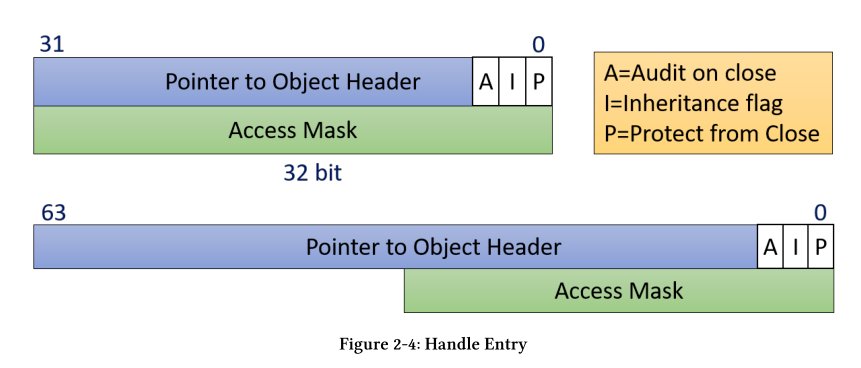
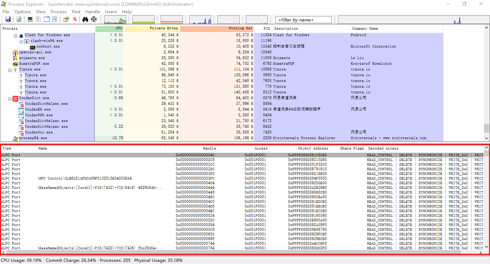
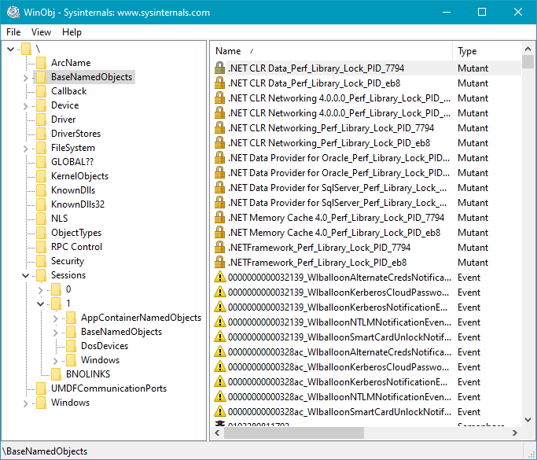
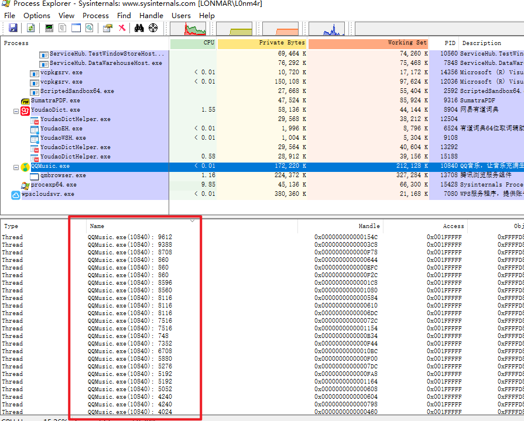
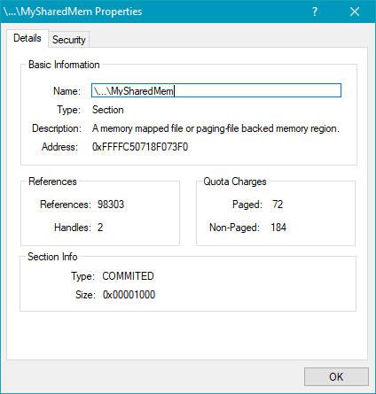

Chapter 2: Objects and Handles
Kernel Objects
Windows kernel exposes various types of objects for use
Applications使用handlers访问内核对象
内核对象有对应的内核管理器，对象管理器包含一个handle count和一个pointer count， 两个的和就是一个内核对象的reference count(引用计数)。 当reference count为0 的时候会释放这个内核对象。
一个内核对象不再使用的时候要使用CloseHandle来关闭它。
句柄的值通常是4的倍数，从4开始。从逻辑上来讲，句柄值就是句柄表的索引，句柄表是基于进程来进行维护的。索引的值指向内核对象。
使用Create*或者open* 函数来获得一个内核对象的句柄，通常成功会返回一个句柄，失败通常返回NULL(0).
例外： CreateFile函数失败时会返回INVALID_HANDLE_VALUE(-1)
Running a Single Instance Process
即保证一个可执行文件只能由一个线程运行。
void NotifyOtherInstance() {
auto hWnd = ::FindWindow(nullptr, L"Single Instance"); // FindWindows
if (!hWnd) {
::MessageBox(nullptr, L"Failed to locate other instance window",
L"Single Instance", MB_OK);
return;
}
::PostMessage(hWnd, WM_NOTIFY_INSTANCE, ::GetCurrentProcessId(), 0);
::ShowWindow(hWnd, SW_NORMAL);
::SetForegroundWindow(hWnd);
}
BOOL CMFCApp::InitInstance()
{
HANDLE hMutex = ::CreateMutex(nullptr, FALSE, L"SingleInstanceMutex"); // 先创建一个互斥锁
if (!hMutex) { // 创建失败
CString text;
text.Format(L"Failed to create mutex (Error: %d)", ::GetLastError());
::MessageBox(nullptr, text, L"Single Instance", MB_OK);
return 0;
}
if (::GetLastError() == ERROR_ALREADY_EXISTS) {
NotifyOtherInstance(); // 如果已经存在的话
return 0;
}
return 0;
}
WTL 工程，但是没环境。。
Handles
句柄间接指向一个数据结构，包含句柄的一些信息。这个数据结构在32位系统上通常是8个字节，64位系统上是16个字节。

Pointer to the actual object ： 8/16字节
Access mask, indicating what can be done with this handle . 创造一个句柄或者打开一个句柄的时候设置。
- If the object is created, then the caller typically has full access to the object
- if the object is opened, the caller needs to specify the required access mask, which it may or may not get
- 比如关闭一个进程需要 PROCESS_TERMINATE mask值为1
Three flags: Inheritance, Protect from close and Audit on close
- Inheritance: 句柄是否可继承
- Audit on close 在句柄关闭的时候记录日志
- 包含这个句柄不会被close
- 使用closeHandle会return false
- debug的时候会报错 0xC0000235
- 可以使用SetHandleInformation设置这三个flag
#define HANDLE_FLAG_INHERIT 0x00000001 #define HANDLE_FLAG_PROTECT_FROM_CLOSE 0x00000002 BOOL SetHandleInformation( _In_ HANDLE hObject, _In_ DWORD dwMask, _In_ DWORD dwFlags);e.g.
::SetHandleInformation(h,HANDLE_FLAG_PROTECT_FROM_CLOSE,HANDLE_FLAG_PROTECT_FROM_CLOSE); // 开启保护 ::SetHandleInformation(h, HANDLE_FLAG_PROTECT_FROM_CLOSE, 0); // 关闭保护读取flags
BOOL GetHandleInformation( _In_ HANDLE hObject, _Out_ LPDWORD lpdwFlags);
open一个process也需要三个参数。
HANDLE OpenProcess(
_In_ DWORD dwDesiredAccess, // the access mask
_In_ BOOL bInheritHandle, // inheritance flag
_In_ DWORD dwProcessId); // process ID
- bInheritHandle : 继承属性
- 对象句柄的继承性 : 父进程可以把内核对象句柄继承给子进程，在创建这个内核对象的时候要标注它是可继承的，也就是操作SECURITY_ATTRITUBES。
- 继承方式: 把父进程的句柄表的一些值拷贝到子进程。--> 只有在子进程创建的时候会继承一些，之后父进程再创建可继承的对象句柄，之前的子进程不会再继承，
- dwDesiredAccess ： access mask
bool KillProcess(DWORD pid) {
// open a powerful-enough handle to the process
HANDLE hProcess = ::OpenProcess(PROCESS_TERMINATE, FALSE, pid);
if (!hProcess)
return false;
// now kill it with some arbitrary exit code
BOOL success = ::TerminateProcess(hProcess, 1);
// close the handle
::CloseHandle(hProcess);
return success != FALSE;
}

- Handle : 句柄值
- ObjectClass ：内核对象的地址
Access ：access mask
Decoded Access : access对应的说明/翻译
Pseudo Handles
Some handles have special values and are not closable. These are known as pseudo-handles,although they are used just like any other handle when needed. Calling CloseHandle on pseudo-handles always fails
- functions returning pseudo-handles：
GetCurrentProcess， GetCurrentThread，GetCurrentProcessToken，GetCurrentThreadToken，GetCurrentThreadEffectiveToken
RAII for Handles
Resource Acquisition is Initialization (RAII)
完全没懂。
#include <windows.h>
#include <stdlib.h>
#include <iostream>
// a simple RAII wrapper for a handle
struct Handle {
explicit Handle(HANDLE h = nullptr) : _h(h) {}
~Handle() { Close(); } // 析构函数
// delete copy-ctor and copy-assignment
Handle(const Handle&) = delete;
Handle& operator=(const Handle&) = delete;
// allow move (transfer ownership)
Handle(Handle&& other) : _h(other._h) {
other._h = nullptr;
}
Handle& operator=(Handle&& other) {
if (this != &other) {
Close();
_h = other._h;
other._h = nullptr;
}return *this;
}
operator bool() const {
return _h != nullptr && _h != INVALID_HANDLE_VALUE;
}
HANDLE Get() const {
return _h;
}
void Close() {
if (_h) {
::CloseHandle(_h);
_h = nullptr;
}
}
private:
HANDLE _h;
};
int main()
{
Handle hMyEvent(::CreateEvent(nullptr, TRUE, FALSE, nullptr));
if (!hMyEvent) {
// handle failure
return;
}
::SetEvent(hMyEvent.Get());
// move ownership
Handle hOtherEvent(std::move(hMyEvent));
::ResetEvent(hOtherEvent.Get());
return 0;
}
Using WIL
vs2019 project->Nuget包管理器。搜索wil安装即可。
修改完直接安装即可。
Creating Objects
需要了解一个参数 固定的 LPSECURITY_ATTRIBUTES,指向一个描述安全信息的结构体
typedef struct _SECURITY_ATTRIBUTES {
DWORD nLength; // 结构体的size
LPVOID lpSecurityDescriptor; // 安全描述符指针 （ACES)
BOOL bInheritHandle; // 句柄对象是否继承
} SECURITY_ATTRIBUTES, *PSECURITY_ATTRIBUTES;
HANDLE CreateMutex(
_In_opt_ LPSECURITY_ATTRIBUTES lpMutexAttributes, // 安全属性
_In_ BOOL bInitialOwner,
_In_opt_ LPCTSTR lpName)
HANDLE CreateEvent(
_In_opt_ LPSECURITY_ATTRIBUTES lpEventAttributes, // 安全属性
_In_ BOOL bManualReset,
_In_ BOOL bInitialState,
_In_opt_ LPCTSTR lpName);
demo:
int main()
{
SECURITY_ATTRIBUTES sa = { sizeof(sa) }; // 设置size
sa.bInheritHandle = true; // 设置可继承
// sa的lpSecurityDescriptor 为NULL 设置为默认的安全描述符
HANDLE hEvent = ::CreateEvent(&sa, TRUE, FALSE, nullptr); // Createvent
DWORD flags;
::GetHandleInformation(hEvent, &flags);
printf("%d", flags); // 1
return 0;
}
Object Names
Some types of objects can have string-based names. names可以传递给open*函数来获得这个对象的句柄
not all objects have names; for example, processes and threads don’t have names - they have IDs.
- 当使用Create函数创建一个存在name的对象时，如果已经存在这个name,则不会创建，权限够的话会直接返回这个对象的句柄。调用GetLastError函数会返回ERROR_ALREADY_EXISTS
- 传给Create函数的name值并不是最终的name,最终的name有一个前缀
\Sessions\x\BaseNamedObjects\- x 是caller的session id .
- x = 0 ，则格式为\BaseNamedObjects\
- 如果caller运行在AppContainer里面，前缀\Sessions\x\AppContainerNamedObjects\
可以使用winObj查看存在的命名对象

Directory objects
- AppContainers do not have the power to use session 0 object namespace.
- 创建一个在session 0里面的对象：传递给对象的Create函数 name=Global\MyMutex
Process Explorer’s Handles view 的name和对象的name不是一个概念
- the name is shown as their unique ID.
- For File objects it shows the file name
- (Registry) Key object names are shown with the path to the registry key.
- Directory objects show its logical path,
- Token object names are shown with the user name stored in the token.

Sharing Kernel Objects
SharingKernelObjects不能只是简单的共享值，同一个句柄值在别的进程里面可能毫无意义。
三种共享机制
- Sharing by name 上面提到的机制，如果name已经存在则返回句柄值（具有这个内核对象的权限的前提下）
HANDLE h1 = CreateEvent(NULL,FALSE,FALSE,"GLOBAL\\MyName");
HANDLE h2 = CreateEvent(NULL,FALSE,FALSE,"GLOBAL\\MyName");
- Sharing by handle inheritance 继承 给子进程
HANDLE Openxxx(
DWORD dwDesiredAddress,
BOOL bInheritHandle, // 是否可被继承
PCTSTR pszName; // 为了保证对象的唯一性，可以为每一个对象分配一个GUID {xxx-xxx-xxxx-xxx}
);
Sharing by duplicating handles （复制句柄）
该函数取出一个进程句柄表中的一个项目，拷贝到另外一个进程的句柄表中。
- 进程可以通过调用这个函数获得别的进程的内核对象。
- 进程可以通过调用这个函数把削减版的内核对象传递给别的进程。
BOOL DuplicateHandle(
HANDLE hSourceProcessHandle, // 标识源进程的内核对象
HANDLE hSourceHandle, // 任意内核对象的句柄
HANDLE hTargetProcessHandle, // 标识目标进程的内核对象
HANDLE hTargetHandle, // 任意内核对象的句柄
DOWRD dwDesiredAccess, //
BOOL bInjeritHandle, // 继承属性
DOWRD dwOptions // 访问屏蔽
);
Sharing by Name
条件
- 对象是可以有name
- 有权限访问该对象
一个WIL程序的demo,只看比较关键的点即可
LRESULT CMainDlg::OnInitDialog(UINT /*uMsg*/, WPARAM /*wParam*/, LPARAM /*lParam*/, BOOL& /*bHandled*/) {
// center the dialog on the screen
CenterWindow();
// set icons
HICON hIcon = AtlLoadIconImage(IDR_MAINFRAME, LR_DEFAULTCOLOR, ::GetSystemMetrics(SM_CXICON), ::GetSystemMetrics(SM_CYICON));
SetIcon(hIcon, TRUE);
HICON hIconSmall = AtlLoadIconImage(IDR_MAINFRAME, LR_DEFAULTCOLOR, ::GetSystemMetrics(SM_CXSMICON), ::GetSystemMetrics(SM_CYSMICON));
SetIcon(hIconSmall, FALSE);
m_hSharedMem = ::CreateFileMapping(INVALID_HANDLE_VALUE, nullptr, PAGE_READWRITE, 0, 1 << 12, L"MySharedMemory");
// 创建一个共享的内存空间 参数可以参考 https://www.cnblogs.com/endenvor/p/9753135.html
if (!m_hSharedMem) {
AtlMessageBox(m_hWnd, L"Failed to create/open shared memory", IDR_MAINFRAME);
EndDialog(IDCANCEL);
}
return TRUE;
}
LRESULT CMainDlg::OnRead(WORD, WORD, HWND, BOOL &) {
void* buffer = ::MapViewOfFile(m_hSharedMem, FILE_MAP_READ, 0, 0, 0);
// 调用MapViewOfFile函数使用这个空间
if (!buffer) {
AtlMessageBox(m_hWnd, L"Failed to map memory", IDR_MAINFRAME);
return 0;
}
SetDlgItemText(IDC_TEXT, (PCWSTR)buffer);
::UnmapViewOfFile(buffer);
return 0;
}
LRESULT CMainDlg::OnWrite(WORD, WORD, HWND, BOOL &) {
void* buffer = ::MapViewOfFile(m_hSharedMem, FILE_MAP_WRITE, 0, 0, 0);
if (!buffer) {
AtlMessageBox(m_hWnd, L"Failed to map memory", IDR_MAINFRAME);
return 0;
}
CString text;
GetDlgItemText(IDC_TEXT, text);
::wcscpy_s((PWSTR)buffer, text.GetLength() + 1, text); // 直接copy
::UnmapViewOfFile(buffer);
return 0;
}
LRESULT CMainDlg::OnCancel(WORD /*wNotifyCode*/, WORD wID, HWND /*hWndCtl*/, BOOL& /*bHandled*/) {
EndDialog(wID);
return 0;
}
LRESULT CMainDlg::OnDestroy(UINT /*uMsg*/, WPARAM /*wParam*/, LPARAM /*lParam*/, BOOL& /*bHandled*/) {
if (m_hSharedMem)
::CloseHandle(m_hSharedMem); // 自动关闭句柄
return 0;
}
Sharing by Handle Duplication
使用的时候几乎没有什么限制
直接调用DuplicateHandle API, 该函数取出一个进程句柄表中的一个项目，拷贝到另外一个进程的句柄表中。两个句柄指向同一个内核对象。
BOOL DuplicateHandle(
HANDLE hSourceProcessHandle, // 标识源进程的内核对象
HANDLE hSourceHandle, // 任意内核对象的句柄
HANDLE hTargetProcessHandle, // 标识目标进程的内核对象
HANDLE hTargetHandle, // 任意内核对象的句柄
DOWRD dwDesiredAccess, // access mask
// 如果dwOPtions被设置DUPLICATE_SAME_ACCESS，dwDesiredAccess就会被忽略
BOOL bInjeritHandle, // 继承属性
DOWRD dwOptions // 访问屏蔽
// DUPLICATE_SAME_ACCESS -> 忽略dwDesiredAccess
// DUPLICATE_CLOSE_SOURCE -> 复制之后关闭源进程的内核对象
);
- 目标进程和源进程都是自身 -> 一个进程有两个该对象的内核句柄，但是access mask不一样
HANDLE hJob = ::CreateJobObject(nullptr, nullptr);
HANDLE hJob2;
::DuplicateHandle(::GetCurrentProcess(), hJob, ::GetCurrentProcess(), &hJob2, JOB_OBJECT_ASSIGN_PROCESS | JOB_OBJECT_TERMINATE, FALSE, 0);
access mask : 对文件对象来说有读写访问等属性
- 从当前进程复制到目标进程
HANDLE DuplicateToProcess(HANDLE hSource, DWORD pid) {
// open a strong-enough handle to the target process
HANDLE hProcess = ::OpenProcess(PROCESS_DUP_HANDLE, FALSE, pid);
if (!hProcess)
return nullptr;
HANDLE hTarget = nullptr;
// duplicate
::DuplicateHandle(::GetCurrentProcess(), hSource, hProcess,
&hTarget, 0, FALSE, DUPLICATE_SAME_ACCESS);
// cleanup
::CloseHandle(hProcess);
return hTarget;
}
上面的demo只是简单的复制了句柄，但是可能目标进程并不知道当前进程复制给了它一个句柄
Two pieces of information must be conveyed to the target process：
- When the handle has been duplicated.
- What is the duplicated handle value?
需要另外一种inter-process communication的方式来解决这个问题
Private Object Namespaces
防止命名冲突产生命名空间的概念。
防止object hijack产生private的概念。
demo : PrivateSharing , 效果如下，无法得到一个Object完整的name

Creating a private namespace is a two-step process: 调用三个api
- CreateBoundaryDescriptor (使用DeleteBoundaryDescriptor关闭一个BoundaryDescriptor)
HANDLE CreateBoundaryDescriptor(
_In_ LPCTSTR Name,
_In_ ULONG Flags); // currently unused
- AddSIDToBoundaryDescriptor/AddIntegrityLabelToBoundaryDescriptor
BOOL AddSIDToBoundaryDescriptor(
_Inout_ HANDLE* BoundaryDescriptor, // the boundary descriptor’s handle
_In_ PSID RequiredSid); // the SID is typically a group’s SID
// allowing all users in that group access to the private namespaces
BOOL AddIntegrityLabelToBoundaryDescriptor(
_Inout_ HANDLE * BoundaryDescriptor, // the boundary descriptor’s handle
_In_ PSID IntegrityLabel); // integrity levels
// allows setting a minimum integrity level for processes
- creating the actual private namespace with CreatePrivateNamespace
HANDLE CreatePrivateNamespace(
_In_opt_ LPSECURITY_ATTRIBUTES lpPrivateNamespaceAttributes,
_In_ LPVOID lpBoundaryDescriptor, // the boundary descriptor
_In_ LPCWSTR lpAliasPrefix); // namespace name ！！！！！
参数LPVOID lpBoundaryDescriptor 说明boundary descriptor不是一个内核对象
使用一个已经存在的Private namespace ，需要共享BoundaryDescriptor对象的句柄
HANDLE OpenPrivateNamespaceW(
_In_ LPVOID lpBoundaryDescriptor,
_In_ LPCWSTR lpAliasPrefix); // namespace name！！！！！
BOOLEAN ClosePrivateNamespace(
_In_ HANDLE Handle,
_In_ ULONG Flags); // 0 or PRIVATE_NAMESPACE_FLAG_DESTROY
demo：
// create the boundary descriptor
m_hBD = ::CreateBoundaryDescriptor(L"MyDescriptor", 0);
if (!m_hBD)
return ReportError(L"Failed to create boundary descriptor");
// sid for all standard users
BYTE sid[SECURITY_MAX_SID_SIZE];
auto psid = reinterpret_cast<PSID>(sid);
DWORD sidLen;
if (!::CreateWellKnownSid(WinBuiltinUsersSid, nullptr, psid, &sidLen))
// CreateWellKnownSid ~ WinBuiltinUsersSid
return ReportError(L"Failed to create SID");
if (!::AddSIDToBoundaryDescriptor(&m_hBD, psid))
return ReportError(L"Failed to add SID to Boundary Descriptor");
// create the private namespace
m_hNamespace = ::CreatePrivateNamespace(nullptr, m_hBD, L"MyNamespace");
if (!m_hNamespace) { // maybe created already?
m_hNamespace = ::OpenPrivateNamespace(m_hBD, L"MyNamespace");
if (!m_hNamespace)
return ReportError(L"Failed to create/open private namespace");
}
m_hSharedMem.reset(::CreateFileMapping(INVALID_HANDLE_VALUE, nullptr, PAGE_READWRITE, 0, 1 << 12, L"MyNamespace\\MySharedMem"));
if (!m_hSharedMem)
return ReportError(L"Failed to create shared memory");
析构函数
if (m_hNamespace)
::ClosePrivateNamespace(m_hNamespace, 0);
if (m_hBD)
::DeleteBoundaryDescriptor(m_hBD);
return 0;
使用WIL实现（
namespace wil {
static void close_private_ns(HANDLE h) {
::ClosePrivateNamespace(h, 0);
};
using unique_private_ns = unique_any_handle_null_only<decltype(
&close_private_ns), close_private_ns>;
using unique_bound_desc = unique_any_handle_null_only<decltype(
&::DeleteBoundaryDescriptor), ::DeleteBoundaryDescriptor>;
}
Other Objects and Handles
KernelObjects, GDIObjects,
User Objects: Windows (HWND), Menus (HMENU) and hooks (HHOOK)
- attributes:
- No reference counting.
- Handle values are scoped under a Window Station
- A Window Station contains a clipboard, desktops and atom table.
GDI Objects (Graphics Device Interface) : original graphics API in Windows
- No reference counting.
- Cannot be shared between processes.
- Handles are valid only in the process in which they are created.